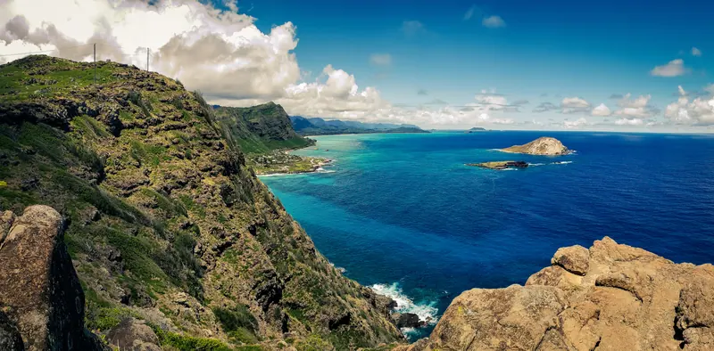
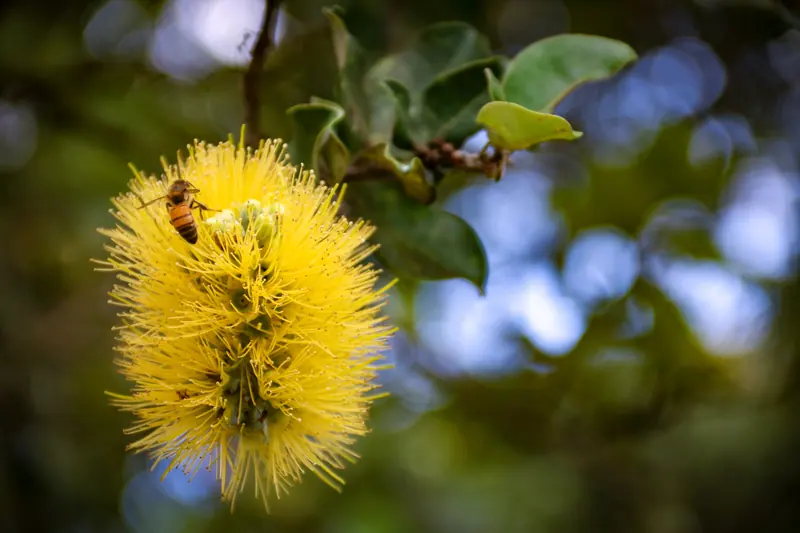
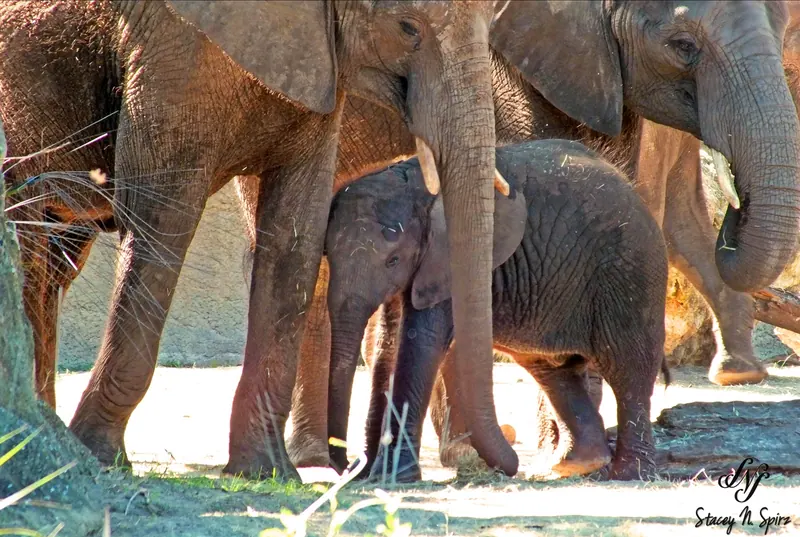
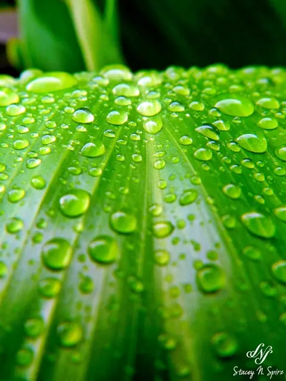
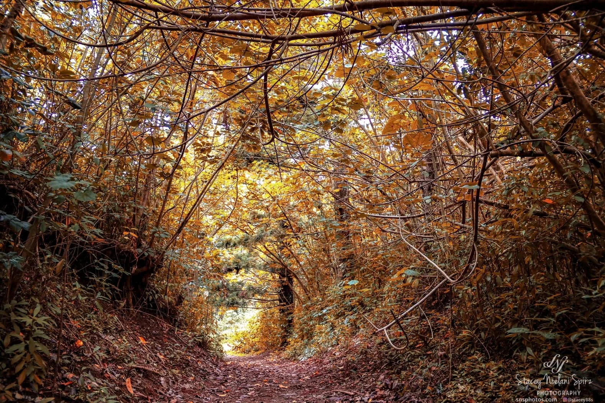

Oʻahu · Hawaiʻi · and beyond
Photography through my eyes.
Real moments, beautiful places, and the little details worth remembering. Photography by Stacey Noelani Spirz.
Explore the galleriesA view through my lens
Featured Galleries
From glowing island evenings to the little wonders of nature — take a look around.

17 photographs
Landscapes & Travel

8 photographs
Portraits & Candid

8 photographs
Events & Action

8 photographs
Botany & Blooms

9 photographs
Nature & Wildlife

10 photographs
Close-Up & Details
Swipe on mobile · use the arrows on desktop

A LITTLE MOMENT, THROUGH MY LENS
Behind the camera
A passion for photography.
Aloha! I'm Stacey, an Oʻahu-based photography enthusiast. I love exploring what my camera can capture — from our island's sunsets and landscapes to people, wildlife, and everyday moments.
Photography is something I genuinely enjoy. I’m always learning, trying something new, and building a collection of moments that mean something to me.
A little more about meHave something in mind?
Let's capture it.
I'm open to photography requests on a donation basis as I continue growing my portfolio. I'd love to hear your idea.